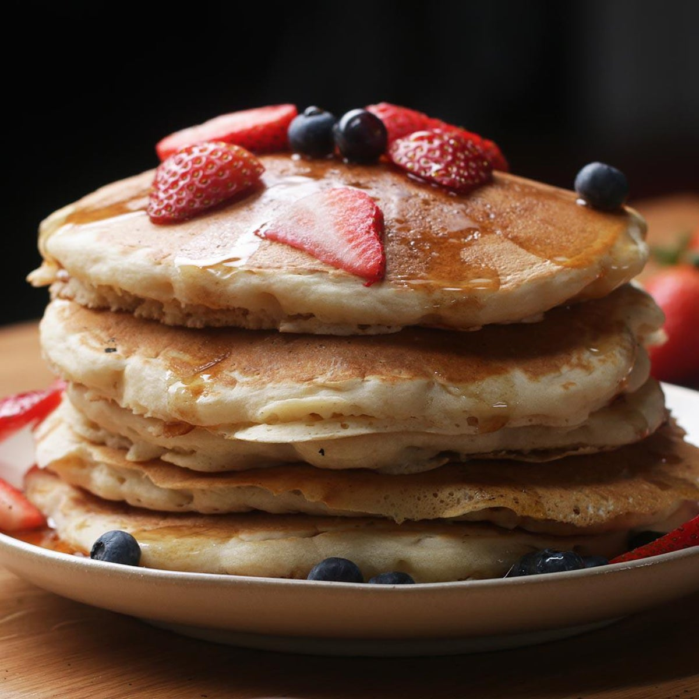

Fluffy Vegan Pancakes

Description
These pancakes are absolutely delicious. You won't believe they ARE vegan!
Ingredients
- 1 cup flour
- 2 tbsp sugar
- 1 tbsp baking powder
- 1/2 tsp salt
- 1 cup vanilla oatmilk
- 1 tbsp apple cider vinegar
- 1 tsp vanilla extract
- maple syrup, to serve
Steps
- In a medium bowl, add the flour, sugar, baking powder and salt. Stir to combine.
- In a second bowl or large measuring cup, add oatmilk, apple cider vinegar and vanilla. Stir to combine.
- Pour the liquid mixture into the dry mixture and whisk until smooth.
- Let batter rest for 5 minutes.
- Pour about 1/2 cup of batter onto a nonstick pan over medium heat.
- When the top begins to bubble, flip the pancake and cook until golden brown.
- Serve warm with maple syrup.